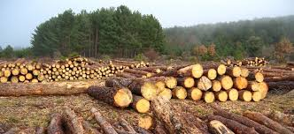
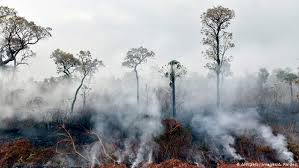
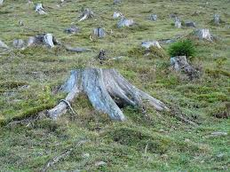
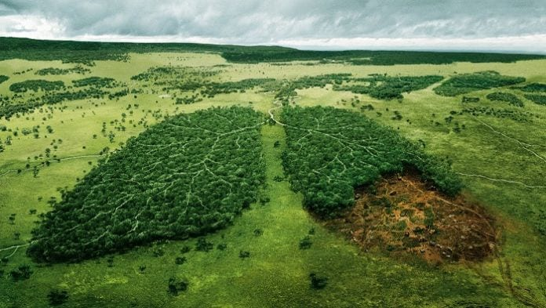

La siguiente investigación se refiere al tema “Deforestación”, que se puede definir como la perdida de los árboles. Para analizar esta problemática es necesario de mencionar sus causas y consecuencias para un mejor conocimiento del tema. Una de las causas es cuando ocurren por ejemplo grandes tormentas que pueden llegar a destruir un bosque, esta es una causa natural, pero también hablaremos de las causas provocadas por el hombre.
Se considera que la deforestación es un proceso provocado por la actividad humana centrada principalmente en la tala y quema de árboles, con el objetivo de ganar insumos industriales o bien superficie cultivable para las labores agropecuarias. La deforestación no ocurre solo por la tala de árboles, sino también, por los accidentes naturales, como los incendios que pueden arrasar con varias hectáreas de árboles o por una actividad volcánica. Estos hechos tienen un impacto tremendo en el deterioro del suelo y también puede poner en jaque el hogar de millones de especies que habitan en ese territorio.
Las causas de la deforestación son variadas, existen dos tipos de deforestación: natural y por el hombre.
Ocurre por ejemplo cuando hay grandes tormentas, tornados, fenómenos naturales o incendios que pueden hacer que un bosque entero desaparezca en poco tiempo. Estos fenómenos son inusuales, y naturales ante todo, por lo que no se pueden detener. También otra de las causas de la deforestación, son las plagas y enfermedades propias de los árboles, donde un escarabajo, perforadores de troncos, u otros insectos producen una masiva «tala natural» de árboles.
Este tipo de deforestación ocurre porque la gente necesita madera para sus hogares, o para producir objetos industriales, al punto de talar hectáreas enteras sin pensar las consecuencias que este proceso trae al mundo. La ambición del hombre es más grande, pues estas talas masivas no se hacen para cubrir las necesidades básicas, sino para enriquecer a pocas personas que están sumidas en la ambición de tener más y más, sin detenerse por un minuto a pensar en las consecuencias de la deforestación y su relación directa con el cambio climático.
1) La deforestación es un factor coadyuvante del cambio climático. Los suelos de los bosques son húmedos, pero sin la protección de la cubierta arbórea, se secan rápidamente. Los árboles ayudan a perpetuar el ciclo hidrológico devolviendo el vapor de agua a la atmósfera.
2) La eliminación de la capa vegetal arrebata a los bosques y selvas de sus palios naturales, que bloquean los rayos solares durante el día y mantienen el calor durante la noche.
3) La deforestación arrasa con la vegetación y sin ella, la calidad del suelo se va eliminando por completo, dejándolo desnudo, sin protección y con características completamente similares a las del desierto, gracias a las condiciones extremas que genera el calor.
4) Muchas especies animales y vegetales han visto su extinción debido a la deforestación; ecosistemas enteros se ven afectados a un ritmo alarmante, y la recuperación que tienen es demasiado lenta como para poder afrontar la demanda de madera por parte de las grandes empresas madereras, plantas de celulosa, y demás interesados.
• Explotar su madera
• Poder tener tierras cultivables
• Crear pastos para el ganado
• Explotar los minerales del subsuelo (oro, petróleo...)
• Construir carreteras y ferrocarriles que atraviesen los bosques
• Construir viviendas e infraestructuras urbanas sobre el suelo forestal.
• El descuido e ignorancia del valor intrínseco
• La falta de valor atribuido
La deforestación, afecta a todos los bosques del planeta, pero el problema es más grave en las selvas lluviosas o pluviselvas que se desarrollan en la zona intertropical. Se calcula que entre el 1% y el 2% de las pluviselvas se pierde anualmente. Las pluviselvas: acogen la mayor biodiversidad del mundo: más de la mitad de las especies animales y vegetales se concentran en las pluviselvas. Por ello la perdida de estos bosques suponen un daño irreparable El bosque que se extiende por la cuenca del rio Amazonas constituye la pluviselva más extensa del mundo. La mayor parte en Brasil. Además de la perdida de bosques y de especies, la deforestación obliga a las poblaciones indígenas a dejar sus hábitats. Los beneficios son para los gobiernos y las compañías privadas que explotan los recursos.
1) La deforestación es un hecho que ocurre y que sigue ocurriendo, es muy difícil aceptar esta situación ya que nos afecta a todos.
2) Muchas veces la deforestación es causada por la humanidad sin hacer conciencia de lo que están sucediendo en el mundo, muchas veces al talar los árboles sólo piensan en su economía sin pensar en lo que pueda suceder en el futuro, cada vez las personas solo se quieren enriquecer más y más sin medir las consecuencias.
3) Y también lo que causa la naturaleza es algo muy complicado para los bosques y selvas, ya que ha afectado mucho a la fauna y los vegetales, muchos animales han perdido su hogar por causa de la deforestación y muchos vegetales no han producido mucho y eso ha afectado mucho a los que lo venden.
4) Por eso es necesario que todos hagamos conciencia de la gran pérdida que hemos tenido por causa del ser humano y la naturaleza.
5) La vida es única y hay que aprovecharla al máximo no aprovecharnos de las demás cosas que nos sirven en el futuro, hay que hacer conciencia y hacer lo correcto, no hay destruir el mundo. Talando y/o quemando arboles no es la única solución para obtener economía, hay otras soluciones.
https://www.ecologiahoy.com/deforestacion
https://concepto.de/deforestacion/
https://www.nationalgeographic.es/medio-ambiente/deforestacion
https://cumbrepuebloscop20.org/medio-ambiente/deforestacion/
Emilio Alberto Oroxóm Villatoro 3ro. "D" Clave:25
Milca Stephanie Fuentes Chaclán 3ro. "E" Clave:12
Miriam Maricela Pretzantzin Ajche 3ro. "E" Clave:22